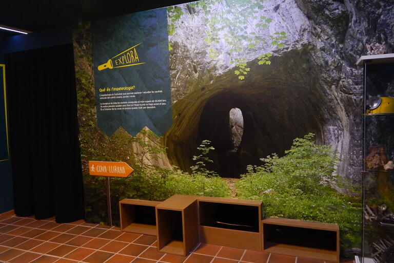

Visita · Vallirana
El Centre d’Interpretació de l’Espeleologia és un espai que s’ha recreat per poder donar a conèixer què és l’espeleologia a persones de totes les edats, però especialment als més menuts. Per això…